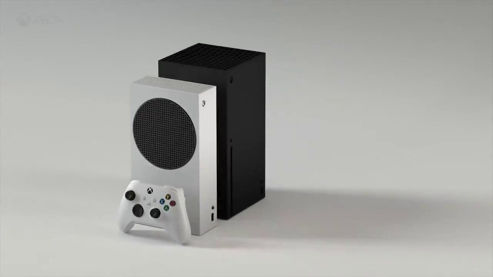

Xbox Series S is all about Game Pass!

That it'll cost $299 isn't a big deal, that it'll be part of a $25 a month subscription bundle is.
Microsoft has finally announced its budget next-gen Xbox, the $299 Xbox Series S. That price is appealing, but the cuts to storage and graphical power… not so much.
We know that the Xbox Series X will be $500, and history has shown that gamers will think twice before dropping that kind of cash. For Microsoft, which launched the Xbox One at $500 and paid the price, there has to be a plan B. But just slashing the price isn’t enough. Microsoft is also planning to offer the Series S as part of a subscription deal with Game Pass Ultimate for just $25 per month. Which has us thinking: Does Microsoft want to sell consoles, or subscriptions?
The Xbox Series S is a smaller Xbox Series X without a disc drive. It's a more affordable console with less powerful specs that still delivers the next-gen experience you've come to expect with ray-tracing, a solid-state drive (SSD), and targeting 120FPS. The PS5 Digital Edition is the exact same as the PS5, just without a disc drive. Because of this, the PS5 Digital Edition is wildly more powerful than the Xbox Series S on paper. That might not mean you should get it over Microsoft system, though. We don't know the pricing of the PS5 Digital Edition yet, but it'll most likely be more expensive over the Xbox Series S, which is retailing for $299.
You can think of the CPU (central processing unit) and GPU (graphics processing unit) as the brains of a console that work together to deliver the best possible games.
Every image you see on screen is created and rendered by the GPU, dictating how good an image looks. Because the PS5 Digital Edition has a more powerful GPU, it can render images at up to 8K (Full Ultra HD) resolution, with a normal target of 4K (Ultra HD). The Xbox Series S is targeting 1440p (Quad HD) resolution. To put that into perspective, 4K has four times the amount of pixels than that of a 1080p (Full HD) image. Either way you're getting stunning images, but 4K is technically sharper and clearer than 1440p. Not everyone can tell the difference, though. It also depends on what TV or monitor you hook your console up to — some can't render 4K at all.
The CPU exists to keep everything running. It processes all information and performs countless calculations per minute. Those pretty pictures don't mean very much if your console is running slow. Microsoft knows how important this is and equipped the Xbox Series S with a CPU that can match the PS5's, clocking out at a speed of 3.8GHz, the same used within the Xbox Series X.
NAUGHTY DOG, LLC.
Privacy Policy | Terms of Use
Copyright © 2020 Sony Interactive Entertainment LLC.
Facebook
Instagram
Twitter
That it'll cost $299 isn't a big deal, that it'll be part of a $25 a month subscription bundle is.
Microsoft has finally announced its budget next-gen Xbox, the $299 Xbox Series S. That price is appealing, but the cuts to storage and graphical power… not so much.
We know that the Xbox Series X will be $500, and history has shown that gamers will think twice before dropping that kind of cash. For Microsoft, which launched the Xbox One at $500 and paid the price, there has to be a plan B. But just slashing the price isn’t enough. Microsoft is also planning to offer the Series S as part of a subscription deal with Game Pass Ultimate for just $25 per month. Which has us thinking: Does Microsoft want to sell consoles, or subscriptions?
PS5 Digital Edition vs Xbox Series S: What's the difference?
The Xbox Series S is a smaller Xbox Series X without a disc drive. It's a more affordable console with less powerful specs that still delivers the next-gen experience you've come to expect with ray-tracing, a solid-state drive (SSD), and targeting 120FPS. The PS5 Digital Edition is the exact same as the PS5, just without a disc drive. Because of this, the PS5 Digital Edition is wildly more powerful than the Xbox Series S on paper. That might not mean you should get it over Microsoft system, though. We don't know the pricing of the PS5 Digital Edition yet, but it'll most likely be more expensive over the Xbox Series S, which is retailing for $299.
What do the CPU and GPU power?
You can think of the CPU (central processing unit) and GPU (graphics processing unit) as the brains of a console that work together to deliver the best possible games.
Every image you see on screen is created and rendered by the GPU, dictating how good an image looks. Because the PS5 Digital Edition has a more powerful GPU, it can render images at up to 8K (Full Ultra HD) resolution, with a normal target of 4K (Ultra HD). The Xbox Series S is targeting 1440p (Quad HD) resolution. To put that into perspective, 4K has four times the amount of pixels than that of a 1080p (Full HD) image. Either way you're getting stunning images, but 4K is technically sharper and clearer than 1440p. Not everyone can tell the difference, though. It also depends on what TV or monitor you hook your console up to — some can't render 4K at all.
The CPU exists to keep everything running. It processes all information and performs countless calculations per minute. Those pretty pictures don't mean very much if your console is running slow. Microsoft knows how important this is and equipped the Xbox Series S with a CPU that can match the PS5's, clocking out at a speed of 3.8GHz, the same used within the Xbox Series X.
Privacy Policy | Terms of Use